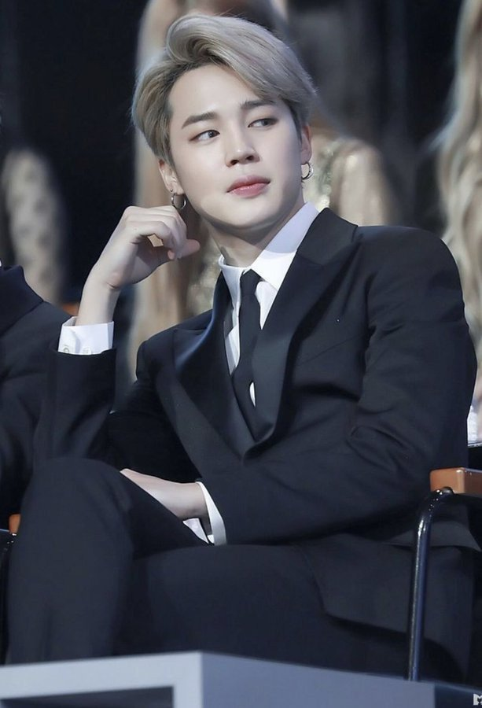

Born
Park Ji-min
October 13, 1995 (age 26)
Geumjeong District, Busan, South Korea
Occupation
Singerdancer
Awards ROK Order of Cultural Merit Hwa-gwan (5th Class) ribbon.PNG Hwagwan Order of Cultural Merit (2018)
Musical career
Genres
K-popAlternative R&B[1]
Instruments Vocals
Years active 2013–present
Labels Big Hit
Associated acts
BTS
Korean name
Hangul 박지민
Hanja 朴智旻
Revised Romanization Bak Ji-min
McCune–Reischauer Pak Chimin